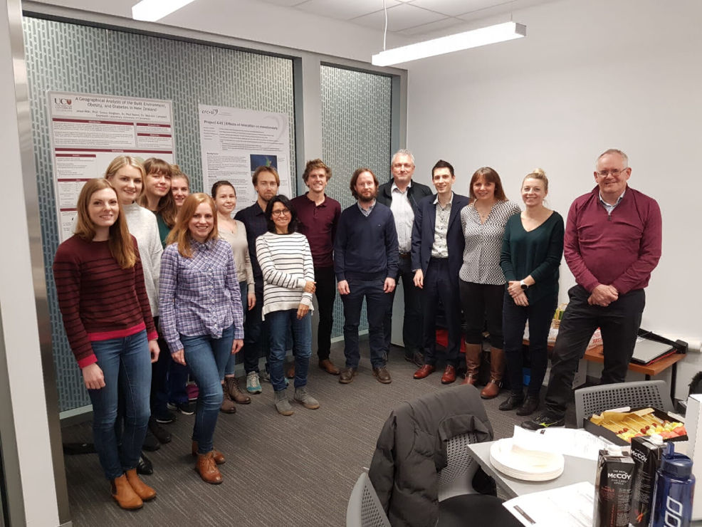

Address
Leeds Institute for Data Analytics
Level 11
Worsley Building
Clarendon Way
Leeds
Contacts
Email: fs14fp@leeds.ac.uk

During our time in New Zealand the Leeds contingent took the opportunity to visit the GeoHealth laboratory at the University of Canterbury in Christchurch. We spent two days with the members of the lab. learning about their common research interests and unique collaboration with the Ministry of Health. I along with fellow PhD students Vicki, Rachel and Charlotte, as well as other Leeds academics, will continue to work closely with the New Zealand team. We are currently writing a commentary paper about the health research-policy landscape in New Zealand. We hope that this relationship will continue to grow in the future and look towards the potential for overseas exchanges between LIDA and the GeoHealth Lab students and staff
Leeds Institute for Data Analytics
Level 11
Worsley Building
Clarendon Way
Leeds
Email: fs14fp@leeds.ac.uk